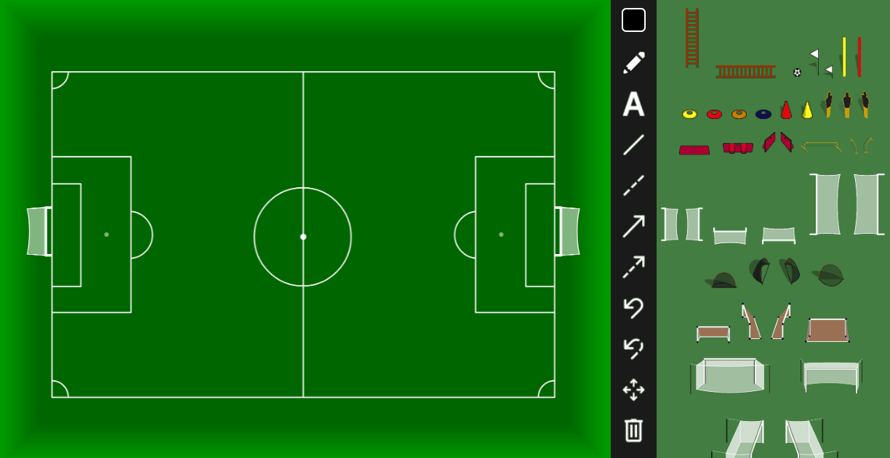
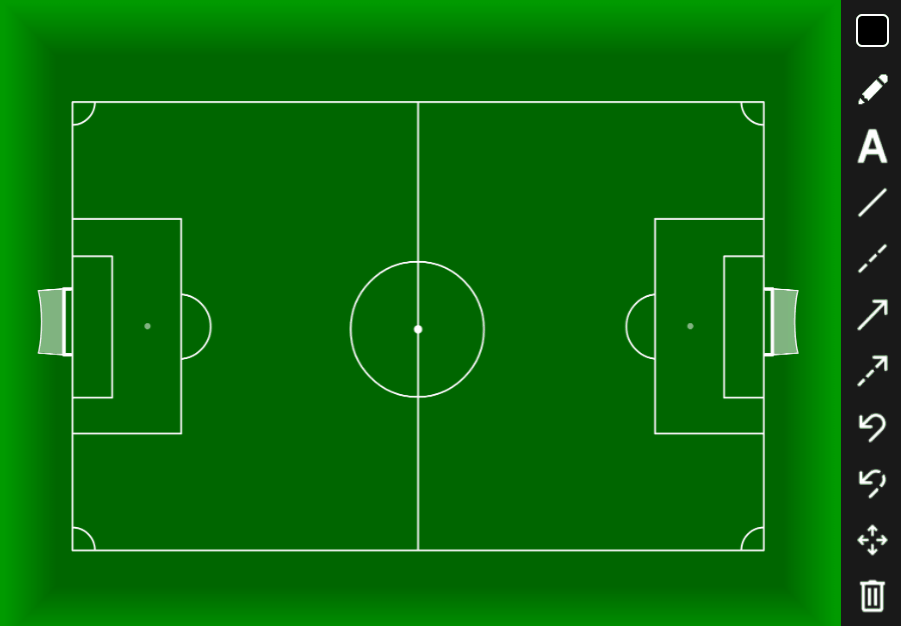
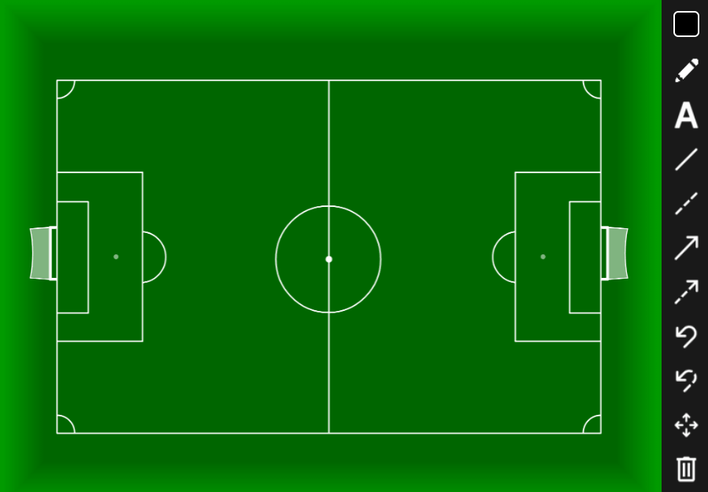
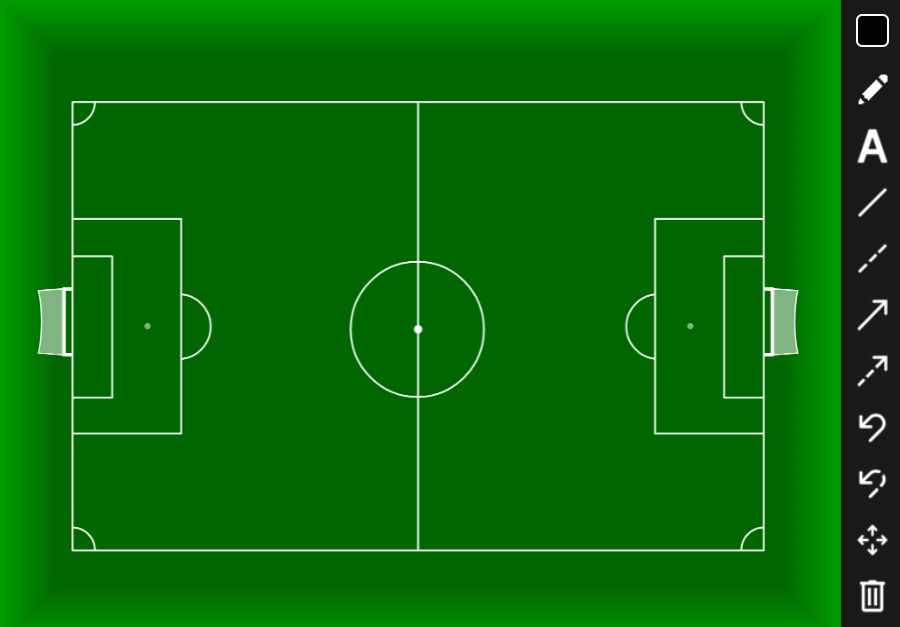
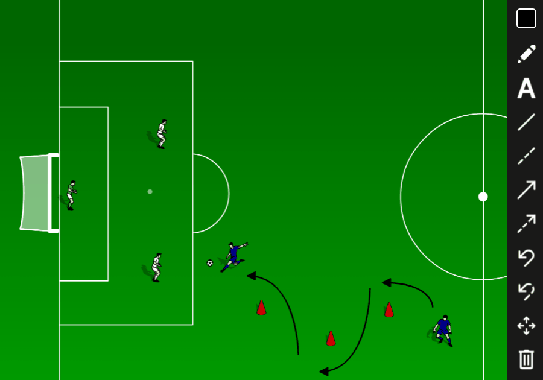

Navigate to the menu below the planner with different pitch design options. Click on the design you want to use, and it will change accordingly in the planner.
Navigate to the menu on the left side of the planner with different player icons. Click on the player icon you want to use then click on the location in the planner where you want to place it.
Navigate to the green menu on the right side of the planner with different equipment images. Click on the equipment you want to use then click on the location in the planner where you want to place it.
Navigate to the black menu on the right side of the planner with markup options.
Click on the square then adjust the color using the marker, the eyedrop tool, or entering custom RGB values.
Click the icon then click and drag in the planner to draw.
Click the icon then click on the location in the planner where you want to place the text. Type your text into the following prompt and click OK.
Click the or icon then click and drag in the planner to add a line or dashed line from the initial clicking point to the point of release.
Click the or icon then click and drag in the planner to add an arrow or dashed arrow from the initial clicking point to the point of release.
Click the or icon then click and drag in the planner to add a curved arrow or dashed curved arrow from the initial clicking point to the point of release. The head of the curved arrow will face the point of release.
The curved arrow will automatically change between an inner curve and an outer curve. To change the curve manually, hold the SHIFT key down while dragging the mouse.
Navigate to the black menu on the right side of the planner with tools.
Click the icon then click and drag the object (text, players, equipment) you want to move in the planner.
Click the icon then click the object you want to remove from the planner. To delete multiple objects at once, click and drag the mouse over the objects you want to remove.
Click the icon then name the image and click save or OK to save the plan as an image.
Click the icon then name the HNKL file and click save or OK to save the plan as a HNKL file.
Click the icon then select the HKNL file and click Open to load the planner from the HNKL file.
Navigate to the text area below the planner to add notes to the plan. Click on the text box then type your notes. Use the check box below to indicate whether to include the notes when saving the plan as an image.